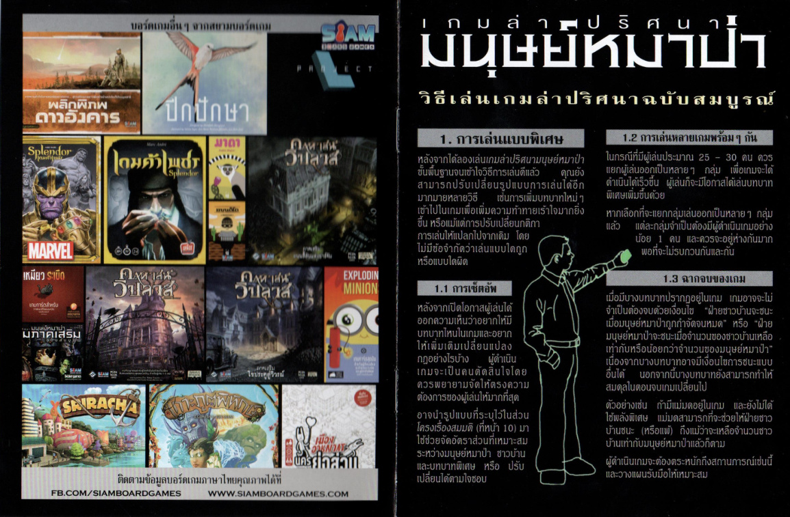
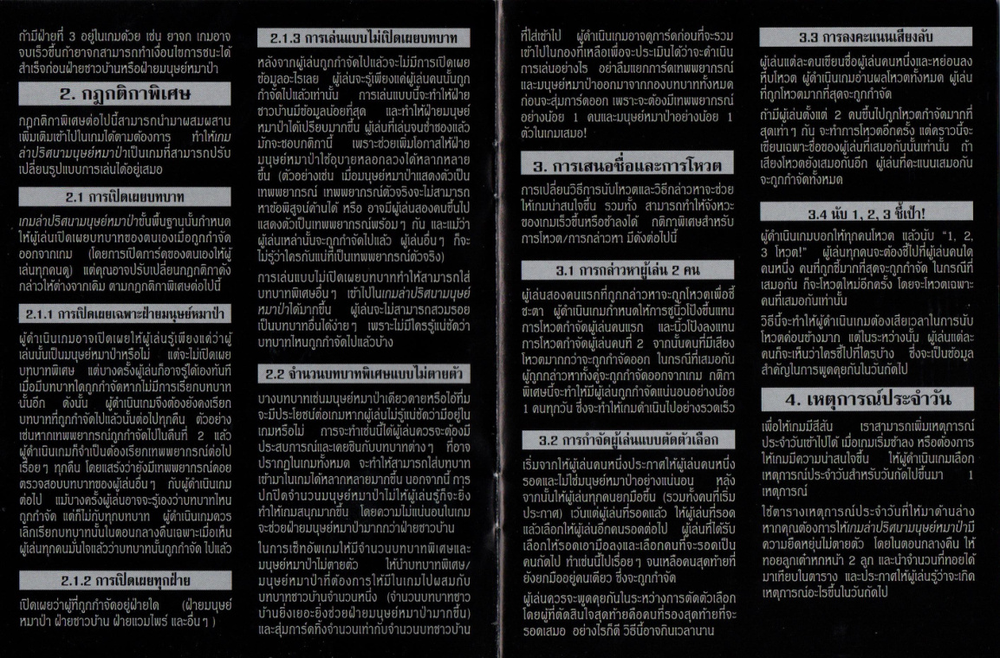
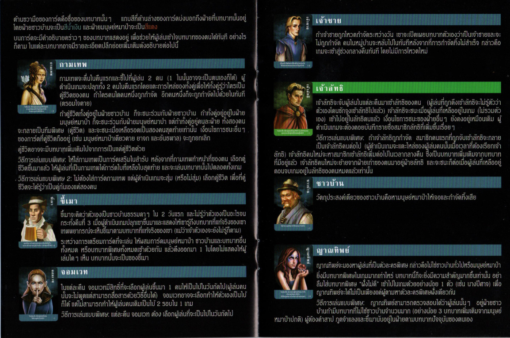
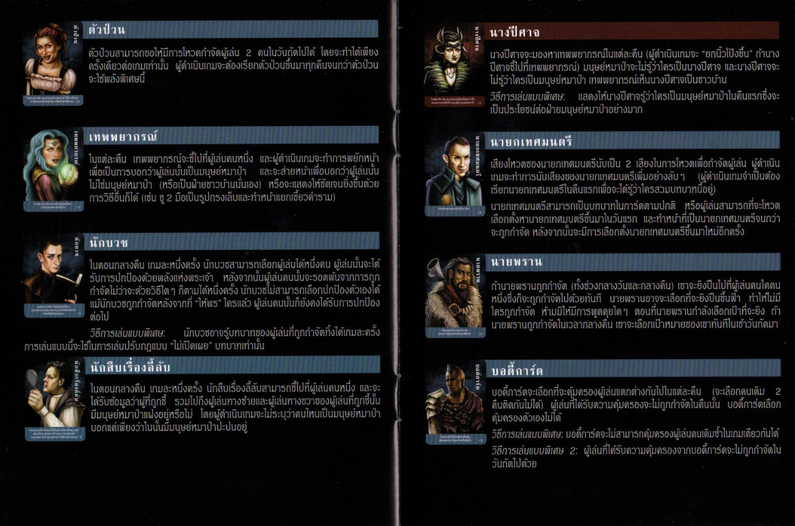
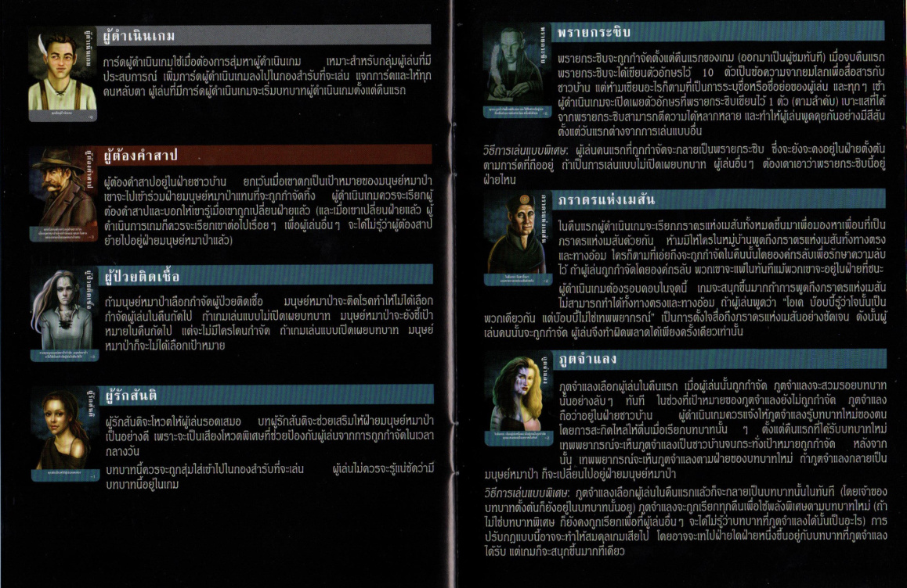
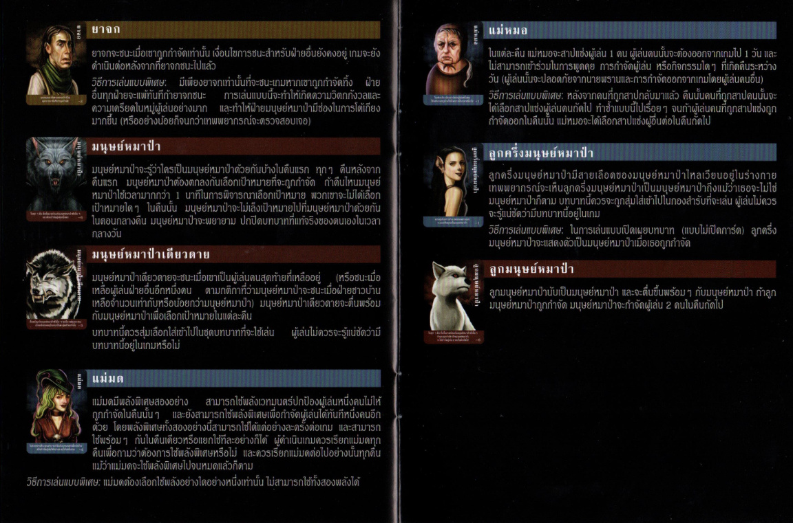
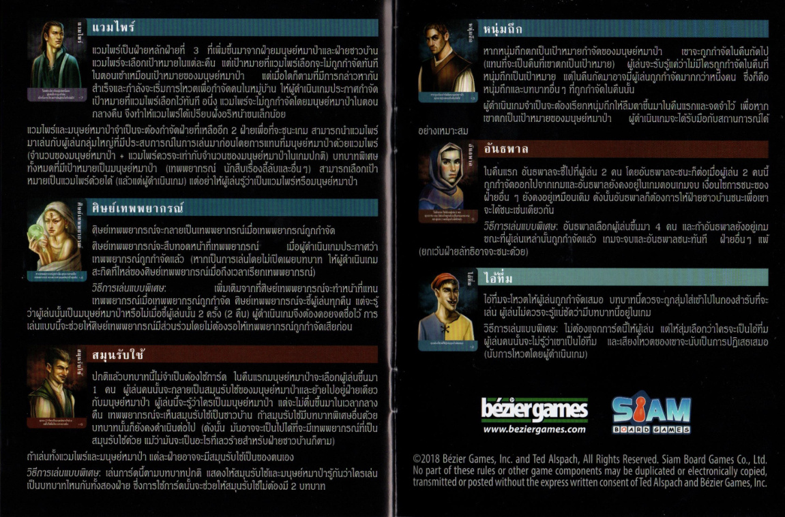

เกมนี้เล่นยังไง
ผู้เล่นถูกแบ่งเป็นสองฝ่ายลับ ๆ คือ ชาวบ้าน และ มนุษย์หมาป่า ตอนกลางคืนหมาป่าจะกำจัดคน ทีละคน ส่วนตอนกลางวันทุกคนต้องพูดคุย สงสัย และโหวตหาตัวหมาป่าให้เจอ เกมนี้ไม่ได้วัดดวง แต่วัดการอ่านคน การเล่าเรื่อง และความนิ่งบนโต๊ะ
ฝ่ายชาวบ้านชนะ
เมื่อช่วยกันกำจัดมนุษย์หมาป่าจนหมด
ฝ่ายหมาป่าชนะ
เมื่อจำนวนหมาป่าเท่ากับหรือมากกว่าจำนวนชาวบ้านที่เหลือ

การเริ่มเกมแรกแบบไม่งง
1. เลือกผู้ดำเนินเกม
ผู้ดำเนินเกมคือคนที่คอยปลุกบทบาทตอนกลางคืน ดูแลลำดับเฟส และประกาศผลเมื่อมีคนตกรอบ
2. ใช้ชุดเริ่มต้นก่อน
สำหรับการเล่นครั้งแรก ใช้ เทพพยากรณ์ 1 ใบ + มนุษย์หมาป่า ตามจำนวนคนเล่น + ชาวบ้าน จนครบผู้เล่นทั้งหมด
3. จำนวนหมาป่าที่แนะนำ
- 6-8 คน: ใช้หมาป่า 1 ใบ
- 8-11 คน: ใช้หมาป่า 2 ใบ
- 12-15 คน: ใช้หมาป่า 3 ใบ
4. แจกการ์ดลับ
แจกการ์ดคว่ำคนละ 1 ใบ ทุกคนดูบทบาทของตัวเองอย่างเงียบ ๆ แล้วเก็บความลับไว้จนกว่าเกมจะบังคับให้เปิดเผย
เมื่อตกรอบ
ให้เปิดเผยบทบาทของตัวเอง แล้วหยุดพูดหรือให้ข้อมูลเพิ่มเติม กลายเป็นผู้ชมจนกว่าเกมจะจบ

ลำดับเล่นกลางคืนและกลางวัน
1. ทุกคนหลับตา
ผู้ดำเนินเกมเรียกบทบาทตามลำดับที่กำหนดให้ลืมตาและทำความสามารถของตัวเอง
2. หมาป่าออกล่า
หมาป่ารู้กันเองว่าใครเป็นพวกเดียวกัน แล้วเลือกเป้าหมายในคืนถัดไป
3. กลางวันเปิดโต๊ะคุย
ทุกคนสืบหาความจริงจากคำพูด ท่าที และเรื่องเล่าที่แต่ละคนสร้างขึ้น
4. โหวตกำจัด
ผู้เล่นตัดสินใจร่วมกันว่าจะกำจัดใคร แล้วเกมเข้าสู่คืนใหม่ทันทีถ้ายังไม่จบ
บทบาทพื้นฐานที่ควรมีตอนเริ่ม
- ชาวบ้าน: ไม่มีพลังพิเศษ เน้นอ่านเกมและลงคะแนนให้ถูกคน
- มนุษย์หมาป่า: ทำตัวกลมกลืนตอนกลางวัน แต่ร่วมมือกันลอบฆ่าคนตอนกลางคืน
- เทพพยากรณ์: ตัวเปิดข้อมูลหลักของเกม ตรวจผู้เล่นได้ทีละคนตอนกลางคืน
เคล็ดลับสำหรับผู้ดำเนินเกม
- อธิบายลำดับกลางคืนให้ชัดก่อนเริ่ม และใช้โทนเสียงคงที่ทุกคืน
- กำหนดเวลาช่วงพูดคุยล่วงหน้า เพื่อไม่ให้เกมยืดเกินไป
- เลือกชุดบทบาทให้พอดีกับประสบการณ์ผู้เล่น อย่าใส่บทมากเกินไปตั้งแต่เกมแรก

กติกาพิเศษที่คู่มือแนะนำ
บทบาทเฉพาะหมาป่า
เพิ่มพลังพิเศษเฉพาะฝั่งหมาป่า เพื่อทำให้เกมเดายากและมีการ bluff มากขึ้น
ไม่เปิดเผยบทบาทคนตาย
ทำให้ข้อมูลในเกมน้อยลง ชาวบ้านต้องพึ่งบทสนทนาแทนการเช็กจากการ์ดที่เปิดออก
โหวตลับ
ให้ผู้เล่นเขียนชื่อเป้าหมายลงกระดาษแล้วนับพร้อมกัน เหมาะกับโต๊ะที่อ่านหน้ากันเก่งมาก
เหตุการณ์ประจำวัน
เพิ่มเงื่อนไขหรือข้อบังคับใหม่ในแต่ละวัน เพื่อเปลี่ยนจังหวะเกมและบังคับให้ทุกคนปรับแผน
คำแนะนำ
ถ้าโต๊ะยังใหม่กับเกมนี้ เริ่มจากกติกาปกติก่อน พอทุกคนเข้าใจจังหวะโกหกและจับผิดแล้วค่อยเพิ่มบทบาทพิเศษเข้าไปทีละชุด
บทบาทเด่นจากคู่มือ
ผมสรุปบทบาทที่เห็นบ่อยจากหน้ารวมบทบาท และแนบสเปรดจาก PDF ไว้ด้านล่างเพื่อใช้อ้างอิงระหว่างเล่น
กามเทพ
จับคู่ชีวิต 2 คน ถ้าคนหนึ่งตาย อีกคนมักตายตามทันที
เจ้าชาย
ถ้าถูกโหวตกำจัด สามารถเปิดเผยตนและรอดจากการโหวตได้ 1 ครั้ง
เจ้าลัทธิ
ค่อย ๆ ดึงผู้เล่นเข้าเป็นพวกลัทธิและเปลี่ยนเงื่อนไขชนะของทั้งโต๊ะ
เทพพยากรณ์
ตรวจสอบผู้เล่นได้ทีละคนในตอนกลางคืนว่าเป็นหมาป่าหรือไม่
นายพราน
หากถูกกำจัด สามารถพาผู้เล่นอีก 1 คนตายตามได้
บอดี้การ์ด
คุ้มครองผู้เล่น 1 คนต่อคืนจากการถูกลอบฆ่าหรือการกำจัดบางแบบ
ตัวป่วน
สร้างความวุ่นวายในการโหวตหรือบังคับให้เกิดการลงมติซ้ำ
ขี้เมา
บทบาทเริ่มต้นอาจดูธรรมดา แต่สามารถเปลี่ยนสถานะของตัวเองในช่วงกลางคืนได้





ภาพคู่มือ PDF ฉบับเต็ม
เพิ่มภาพจาก PDF ต้นฉบับครบทั้ง 15 หน้าไว้ท้ายหน้าเว็บ เพื่อให้เปิดเทียบกติกา บทบาท และโหมดพิเศษได้ครบในหน้าเดียว